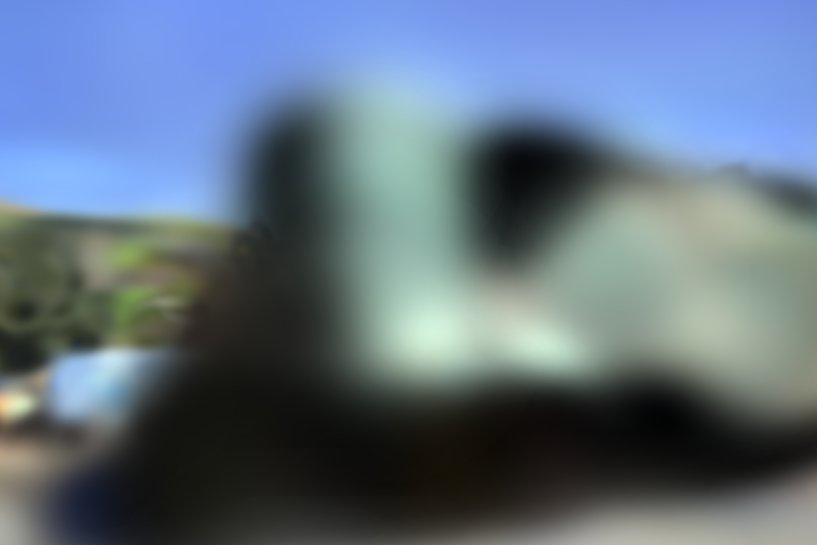
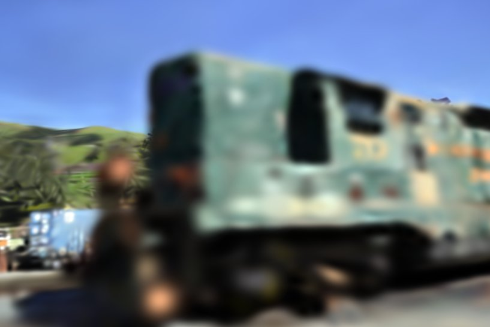
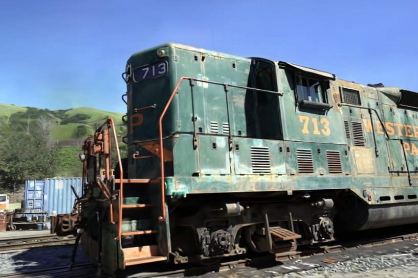
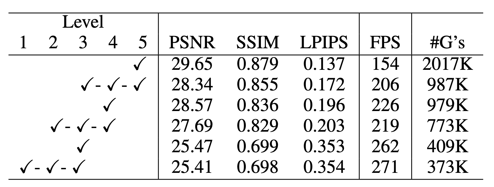

The videos above demonstrate the results of 3DGS and our method (3DGS-FLoD) running on a laptop equipped with an NVIDIA GeForce MX250 2GB GPU.
Our method enables customizable and memory-efficient rendering across various hardware configurations.
3D Gaussian Splatting (3DGS) achieves fast and high-quality renderings by using numerous small Gaussians, which leads to significant memory consumption. This reliance on a large number of Gaussians restricts the application of 3DGS-based models on low-cost devices due to memory limitations. However, simply reducing the number of Gaussians to accommodate devices with less memory capacity leads to inferior quality compared to what is achievable on high-end hardware.
To address this, we propose integrating a Flexible Level of Detail (FLoD) to 3DGS, allowing a scene to be rendered at varying levels of detail according to hardware capabilities. While existing 3DGSs with LoD focus on detailed reconstruction, our method provides reconstructions using a small number of Gaussians for reduced memory requirements, and a larger number of Gaussians for greater detail.
Empirical results demonstrate that our method provides various rendering options with tradeoffs between rendering quality and memory usage, thereby allowing real-time rendering across different memory constraints. Furthermore, we show that our method generalizes to different 3DGS frameworks, indicating its potential for integration into future state-of-the-art developments.
Training starts at level 1 with the given SfM points and proceeds to the maximum level. Each level's training includes applying a scale constraint to provide the appropriate detail for that level and performing overlap pruning to mitigate Gaussian overlap. Upon completing each level’s training, Gaussian clones are saved to create a multi-level Gaussian set. This set enables both high-quality rendering using the maximum level and efficient rendering through selective rendering by using multiple levels.
Our method maintains the overall structure while providing level-appropriate details across each level.
Selecive rendering using levels 5, 4, and 3 from 3DGS-FLoD achieves visual quality comparable to using only level 5, while reducing the number of Gaussians by 40%.
Selective rendering gives you the flexibility to match rendering speed and memory use to your hardware. The table below shows that selective rendering maintains better perceptual quality than using only lower levels, even with fewer Gaussians.
Comparison of the rendering results between Level 5 of 3DGS-FLoD and baseline models.